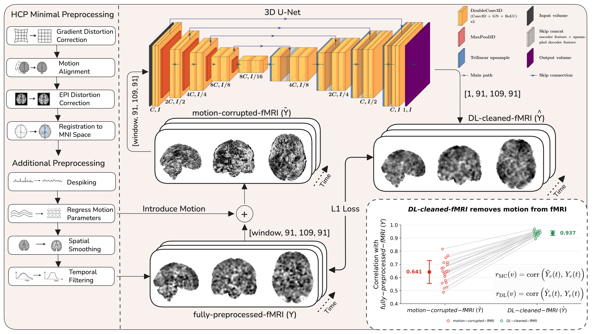
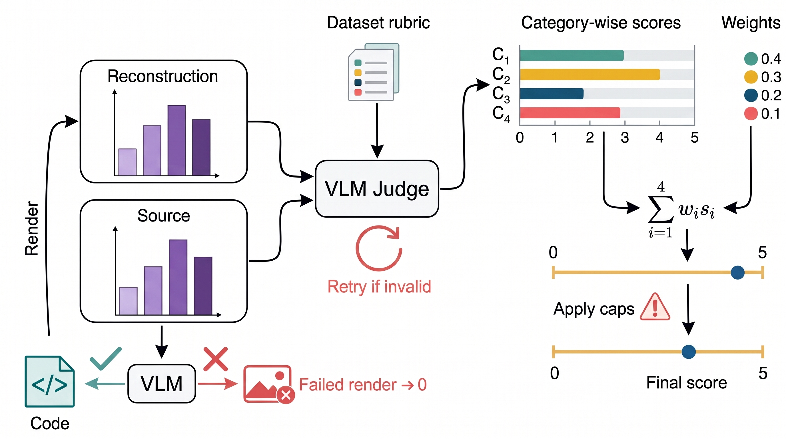
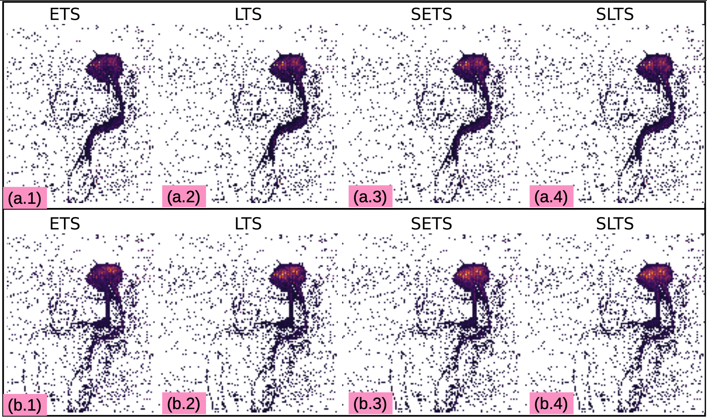
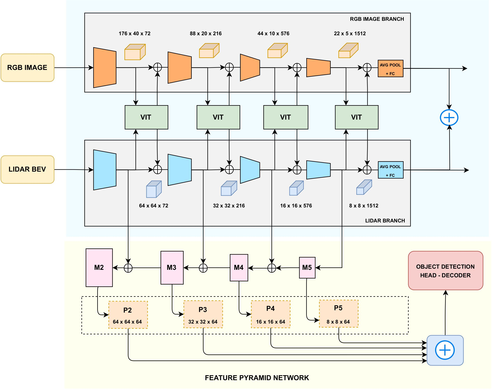
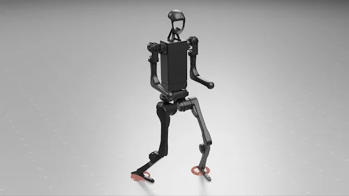
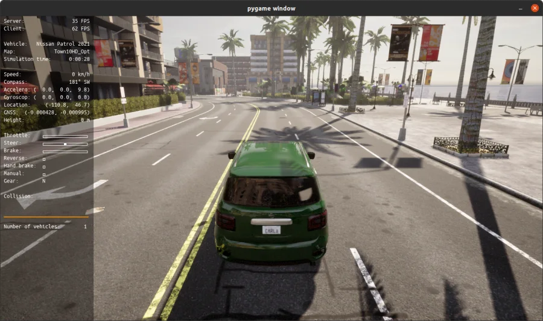
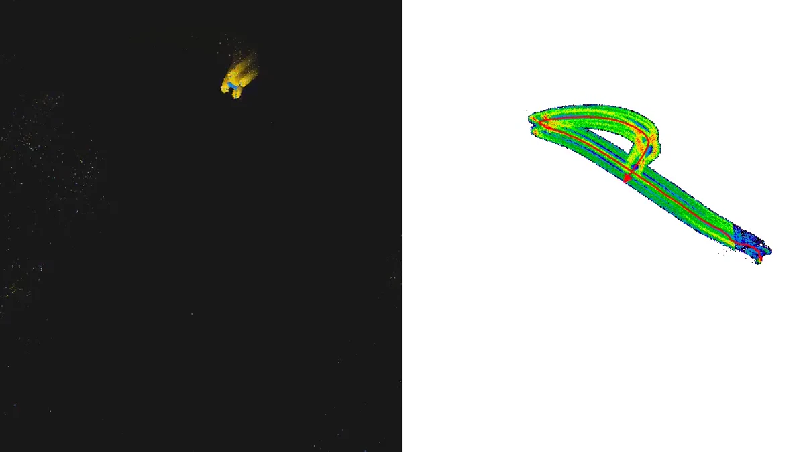
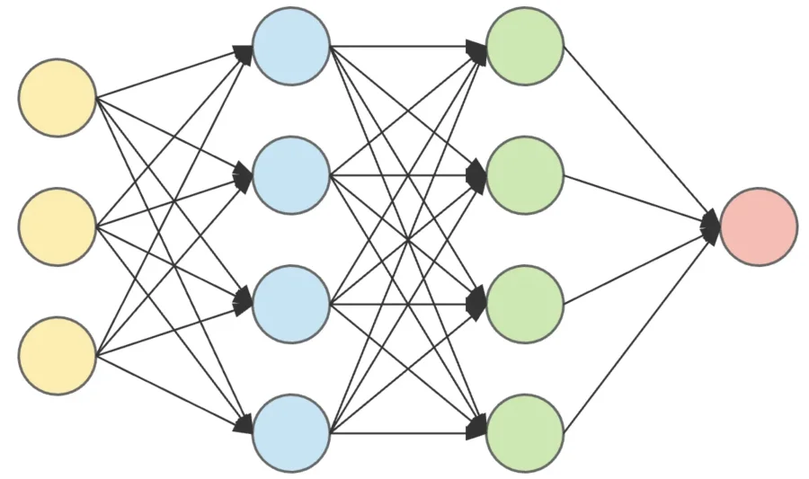
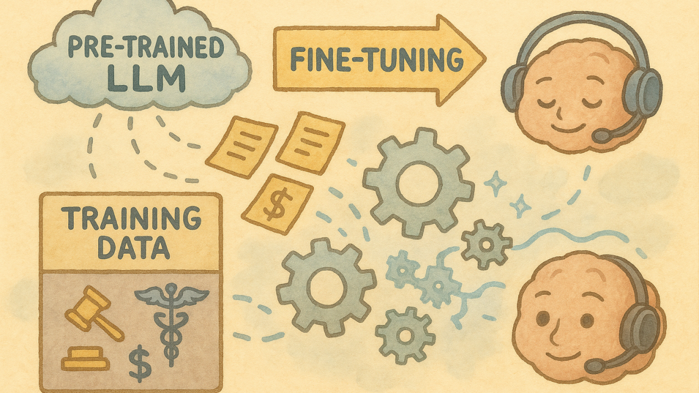
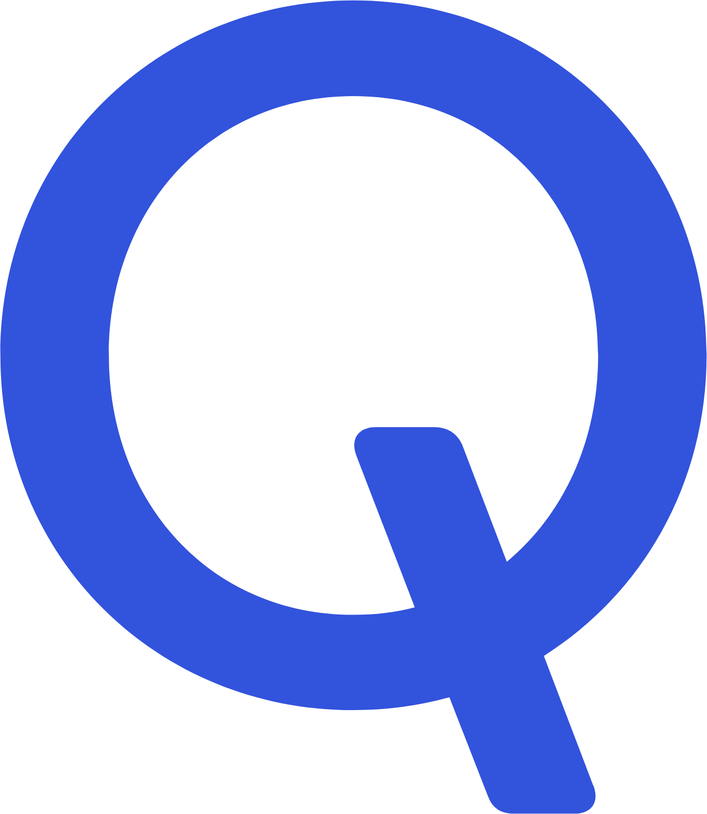

Characterization of Resting-State fMRI in Gray and White Matter: Comparison of Signal Measures and Network Patterns
Under review
I am a master's student in Computer Science at Duke University, specializing in AI/ML and advised by Dr. Bhuwan Dhingra.
Previously, I obtained a B.Tech in Computer Science from NIT Karnataka with Dr. Jeny Rajan. I also spent time as a research intern at IISc's NeuRonICS Lab.
My research interests are in embodied intelligence, with the goal of advancing robots to understand and interact with the physical world. My work in multimodal perception, state estimation, efficient inference, VLMs, robot autonomy and computational neuroscience has shaped my interests in:




A reinforcement-learning system for Balatro that uses separate PPO policies for hand play and shop decisions, trained in a verified Rust simulator.
Read more
An LLM-guided humanoid learning framework that identifies missing skills, generates reward functions, and trains new behaviors with reinforcement learning.
Read more
An autonomous-driving model that fuses RGB and LiDAR features with multi-stage vision transformers to predict navigation waypoints.
Read more
An event-camera pipeline that detects and tracks fast-moving drones using sparse clustering and motion association, with a buffered implementation for ARM Cortex edge hardware.
Read more
A radar-based activity-recognition CNN compressed with ternary weights, quantized activations, and integer-only inference for embedded deployment.
Read more
A post-training study of how supervised fine-tuning and verifier-based reinforcement learning affect instruction following, mathematical reasoning, and code generation.
Read moreGraduate Research Assistant
Advisor: Dr. Andrew M. Michael
Machine Learning Intern

Software Intern